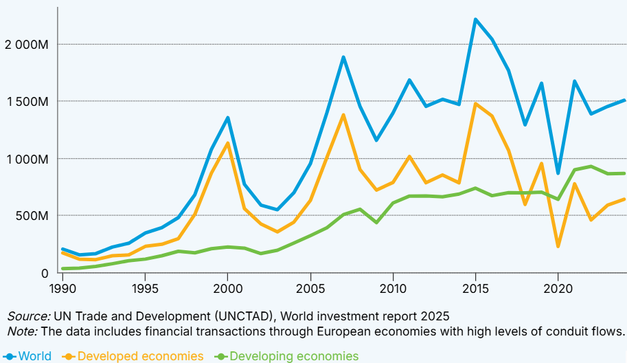
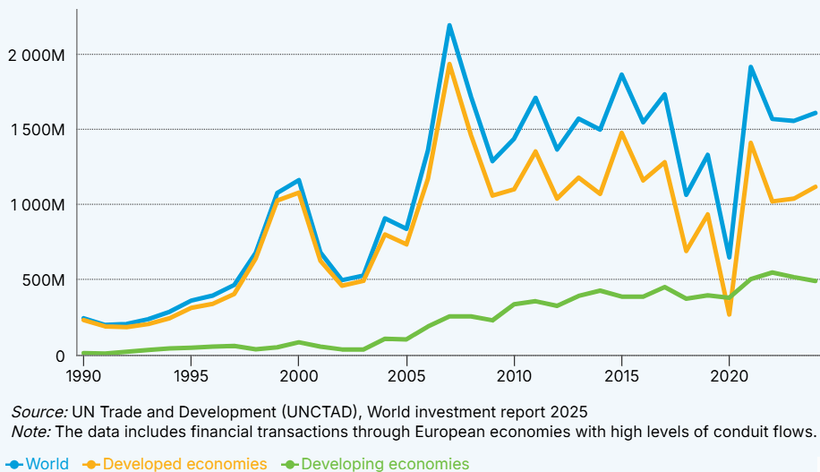
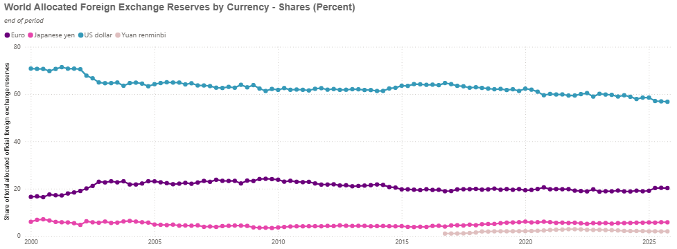
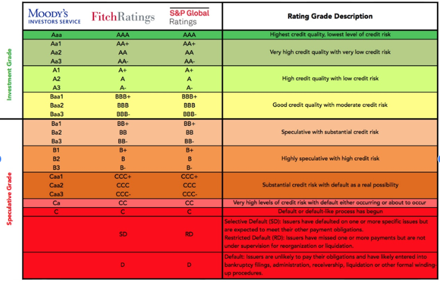
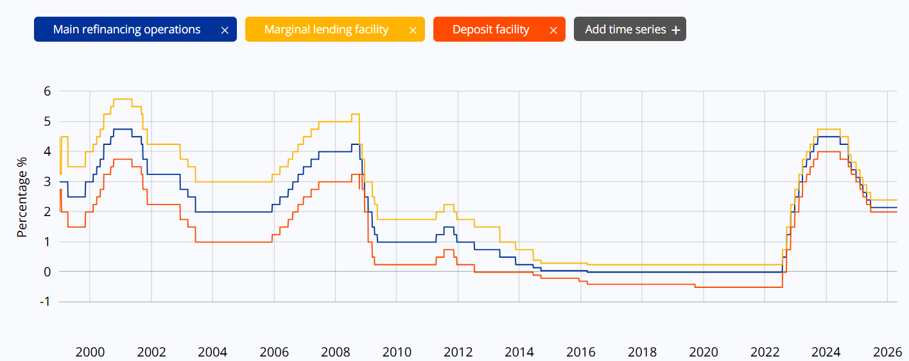
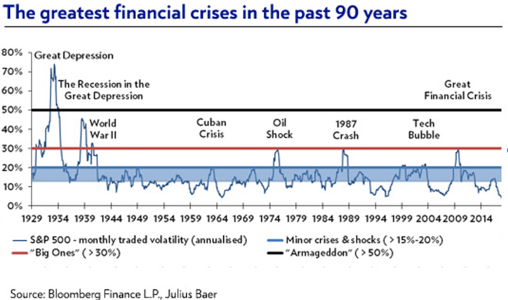
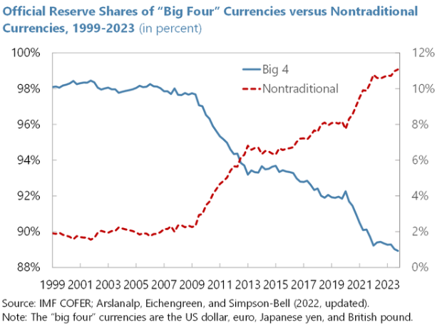

5. International Finances
Theory
Foreign Direct Investment Investment is growing more than trade. Cumulative annual average rates in real and dollar terms
Source: UNCTAD, United Nations
Theory
- Neoclassical (factor endowments, relative prices) Trade would be enought, then why ¿flows between developed countries?
- OLI - Ownership, Location e Internalization - Eclectic theory Dunning "Multinational enterprises and the global economy" & "Globalization, Trade and Foreign Direct Investments"
- New theory of internnational trade - Firm heterogenity - Melitz
Effects of FDI
- Growth:
- Technology & Innovation: Multinationals are more technology intensive, but not in destiny markets. Problems with absortion of technology
- Employment: Increase productivity, but also lower standard than in home country
- Trade: Domestic market vs international. Long term, more openness
- BoP effects – Imports, services (technology), rent (repatriation of profits)
Fiscality: - Tax havens (even in UE 27) - Base erosion and profit shifting - Needed a global policy. eg. UE 15% tax rate for multinational (based in 2021 OECD agreement on Global Minimun Tax)
Final effect, in general, depends on firms strategy and country conditions (level of development) and economic policies. It is an oportunity.
Data
 |
 |
Foreign direct investment explorer
WIR 2019 https://unctad.org/en/PublicationChapters/WIR2019_CH1.pdf
Increasing weight of FDI in services Mainly among developed countries
| Foreign Capital Issued (%) | Foreign Capital Received(%) | |||||
|---|---|---|---|---|---|---|
| 1980 | 2000 | 2019 | 1980 | 2000 | 2019 | |
| Developed countries | 86,9 | 90,4 | 75,9 | 57,5 | 78,3 | 66,6 |
| Developing countries | 13,1 | 9,3 | 22,9 | 42,5 | 21,0 | 31,0 |
Multinationals
- Top companies: Fortune 500
- World Investment Report
TNI, the Transnationality Index, is calculated as the average of the following three ratios: - foreign assets to total assets, - foreign sales to total sales and - foreign employment to total employment.
Globalisation

IMF: Global Foreign Exchange Reserves TrendsFinancial Markets
Characteristics
Financial markets are different from other markets:
- Improve resource allocation:
- Allows funds to go where they are most needed (profitable, productive)
- Intertemporal character. Term stucture transformation
- Allocation over time of funds.
- Risk transfer. Diversification (variety, nom correlated) and insurance.
- Effects on the real economy
- Speed, volatility. Increase the risk of contagion
- Others (payment services, treasury, information, high internationalization …)
Defining characteristics of financial markets.
- Liquidity: small bid–ask spread, you can trade quickly at quoted prices.
- Depth: (many buy and sell orders) Market depth is an indicator that measures the number of sellers and buyers for the same security. Large orders have minimal price impact.
- Breadth: The higher the number of independent instruments (e.g. different stocks or bonds) actively trading and the number of active participants.
- Size:Total market capitalization or notional value traded or Volume traded.
- Ohter: Transparency, volatility, resilience.
Agents - Markets - Products
-
Agents: Intermediaries, lenders and borrowers. The intermediaries can be: - Banking (banks, savings banks, credit cooperatives) - Non-banking (pension funds, insurance companies, collective investment institutions)
-
Markets. Depending on the moment of trading of the assets - Primary or emission - Secondary or negotiation
-
Type of assets - Monetary - Interbank - Short-term public debt - Capital - Fixed rent - Variable income
-
Products: Assets for holders and liabilities for issuers. The characteristics are: liquidity, profitability and risk.
Stages of Finantial globalization
Bretton Woods & Controlled Liberalization (1945 – 1971)
-
1970 first stage of financial globalization. Deregulated. Financial companies Banks seeking better regulation. International banking
- Liberalization
- Growth
- Search for profitability (low profits in developed markets)
-
Oil crisis of 1973 and 1979. Oil producers finance the surplus of developed countries.
- 1990 global banking
- Technological development has contributed to financial globalization: faster and more secure transactions (registration)
- Institutional investors (pension funds, sovereign funds, insurance funds,…)
-
Liberalization (1980 – 2000)
-
Deep Integration (2000 – 2020s)
Ongoing
- Fintech platforms, peer-to-peer lending and crowdfunding cross borders with minimal infrastructure.
- Rise of cryptocurrencies, tokenization and decentralized finance (DeFi).
Financial globalization (banks, investment funds...) benefits developed countries the most.
Institutions
International - Macro capital flows - Lender of last resort of the IMF (International Monetary Fund) - Special drawing rights - Microeconomic factors. Lower administrative barriers BIS -Bank for International Settlements. BIS: Basel II (1997) and III (capital requirements)
European - ECB (European Central Bank) - Eurosystem - Eurozone monetary authority. ECB+BC countries in the Euro - ESCB - ECB and the ECBs of the EU members
Banking union: - Single regulatory code (same legislation) - Unique supervisory mechanism - Single resolution mechanism
Fiscal union missing: European deposit insurance, European treasury/debt
Spain - BdE (Banco de España) - CNMV - Dirección general de seguros
Rating agencies - Reduce information requirements - Being evaluated is a requirement to be considered by the market
Problems with rating agencies: - Search for the most lax agency in its evaluations - Assesses only non-payment risk (solvency), without liquidity risk - Requires historical data and reliable series - Procyclical behavior - Oligopoly


https://data.ecb.europa.eu/main-figures/ecb-interest-rates-and-exchange-rates/key-ecb-interest-rates
Finantial crisis
Specificities - Externalities - Speed of transmission - Incomplete information / information asymmetry Types of crises - Debt crises (private – sovereign) - Banking crises - Currency crises / Exchange‐rate crises Risks - Liquidity risk - Solvency risk

1982 México 1994 México 1997 Asia 1998 Rusia 2001Argentina
 https://www.imf.org/external/pubs/ft/wp/2013/wp1328.pdf.
https://www.imf.org/external/pubs/ft/wp/2013/wp1328.pdf.
Three steps: Finantial (morgate & banking) + debt + trade)
Phase 1a. Mortgage (high-risk – subprime) Freddie Mac – Fannie Mae – AIG insurance – Securitization Private debt Supervision Shadow banking: financial innovations Traditional countercyclical measures Phase 1b. Banking crisis Lehman Brothers collapse (2008) – Moral hazard Systemic crisis Interbank market freeze AIG (American International Group) bailout: $180 billion Merrill Lynch Phase 2. Sovereign-debt crisis Bailouts ECB as lender of last resort
Phase 3. Trade Transmission mechanisms: Financial (mainly in developed countries) Trade (mainly in developing countries) New consensus – Key principles: Deregulation is not always beneficial Financial markets are not perfect (lack of market pricing during the crisis and mispricing of risk) Role of central banks Public-private sector relationship Multilateral mechanisms and international coordination Systemic risk Comprehensive and flexible regulation
The world after 2008 - Lasting consequences of the international financial crisis

Exercise
Exercises
Draw the evolution of flow and stock FDI of developed and developing countries. https://unctadstat.unctad.org/datacentre/dataviewer/US.FdiFlowsStock
Discuss the evolution of foreign direct investment in Spain and in another country of your choice—both inward and outward—using information from: https://www.oecd-ilibrary.org/finance-and-investment/data/oecd-statistics-on-measuring-globalisation_global-data-en
FDI Foreign Direct Investment: inversión directa extranjera mediante filial, adquisición o nueva planta.
El FDI implica mayor control, pero también mayor riesgo.